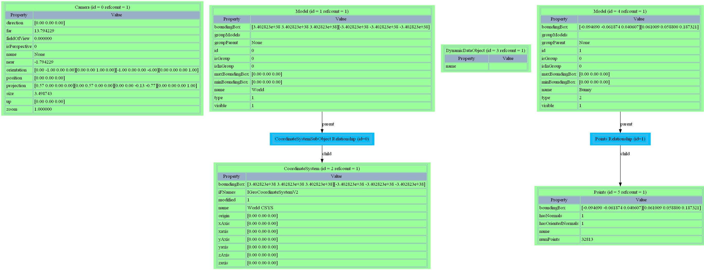

Getting Started¶
Running Python Scripts in Geomagic Applications¶
Geomagic applications have a built in scripting engine for Python that is used by the macro system. As a result, you can leverage it to run Python scripts using the standard commands for running macros:
The Play Macro command (found in the Automation tab under Macros section)
The Scripting panel (found by default as a tab in the same pane with the Graphics and Getting Started panels)
The Play Macro command¶
The Play Macro offers a dropdown list of all the macros and scripts that have been loaded into the application. Select the script you want to run and press “Apply”. You can run multiple scripts from this dialog; press “OK” when you have finished.
The Scripting panel¶
The scripting panel is divided into a list of all loaded scripts and macros on the left and a text box on the right. To run a script, select it from the list on the left and then press the run icon (the green arrow) above the text box on the right. Text output from the script may be displayed in the output window, located below the macro list and text box.
To load a script into the application, press the file open icon (the yellow file folder) above the text box on the right. This will open a file dialog from which you can select the script to load. After the script is loaded, it will appear in the macro list to the left.
To create a new script, press the new icon (the white paper) above the text box on the right. A popup dialog will ask for the name of the script and the scripting language. (For a python script, leave the option for the scripting language on its default setting.) After the script is created, it will appear in the macro list to the left.
After scripts are modified, they should be saved by pressing the save icon (the blue diskette) above the text box on the right. Note that when scripts are loaded into the application, they are stored as a separate copy from the file that was loaded. Saving a modified script will not overwrite the file that was loaded, but it will overwrite the previous copy of the loaded script.
Basic Geomagic Python Scripting Essentials¶
Geomagic applications provide an extension to the standard Python language by providing modules that give you access to the application functionality. These modules are located in the geomagic.api and geomagic.app namespaces that are installed with the application. The macro system automatically adds this location to the sys.path variable in the Python environment before executing your script. Additionally, the geo namespace is available to use, so you have access to the standard macros.
What You Can Do With Scripting¶
The following is a list of things that you may want to do with scripting:
Add connections to custom or proprietary functionality.
Create additional calculations on Geomagic models that are not part of the standard Geomagic offerings.
Automate repetitive operations in the product.
Add Dialogs to run your scripts or add custom functionality to your installation.
Caveats¶
In order to allow events to be monitored from scripts, the Python scripting engine runs in the background during application execution, as if you had started the interpreter from a command line. As a result, variables defined in the global dictionary are not destroyed. This may result in some unexpected behavior especially between executions of multiple scripts. Take care in writing scripts to minimize the number of global variables that you use. Also be sure to initialize your variables and to clean up class instances as much as possible.
Concepts¶
There are a few background concepts that are useful when creating and designing custom workflows and scripts on the Geomagic Platform.
API versus APP¶
There are two sets of models that can be used in the Scripting Platform to interact with the Geomagic Developed tools. The main difference between the two is that the APP set of tools require the Geomagic Wrap Application Framework while the API can be ran independent of the GUI.
The importance of this distinction is when you wish to develop an application that either requires a completely headless implementation –a more in-depth integration project to another software package – or you wish to create a custom UI in Geomagic Wrap. To create complete integrated solution you will not be able to use the APP modulus only the API ones.
Using the Model Manager¶
The Model Manager is an object in the workspace that exists at all times to store data objects in. The model manager exits in the scripting environment and in the GUI at the same time. This enable a user to select an object in the Model Manager and it be the object a script acts on. New objects can be added to the model manager and objects can be take away. Models exit in the Model Manager. A model is a class of data objects that have a type. For example this can be a Mesh object or a Point Cloud object, but they are both models. Models can have child features as well such as a curve or reference feature. At all times there must be an active object. The world is also a model
Selections¶
Selections are subsets of other objects. A selection of triangles can contain all triangles of an object or only ones that have been added to a selection. Selections work as objects to iterate through and are helpful when checking conditions. Be aware that the index of the selection is not the same as the index of the object. This can be solved by extracting an identifiable value from an object in the selection, such as a vertex index or mesh point, that is consistent across all sets.
Units¶
By default all distance units are in Meters while all rotations are use radians.
GFX Objects¶
GFX Objects are custom graphic objects that exist in the graphics window that can be used to display things to the user. GFX objects share the same primitive name as other data type classes but GFX objects are often used for things that the user will not click on and the developer wishes to have more control of the appearance of the object.
Macros and Scripts¶
Recorded macro functions can be used interchangeably in a Script. These Macro functions act on the current Active Object.
Examples¶
I. Load a Model¶
This example shows how to load a file. In this case, a test file is loaded from the examples directory.
# Open test file
path = Directories.getDirectory(Directories.DIRECTORY_EXAMPLE_DATA)
geoapp.openFile(path + "\\axial.obj")
II. Get the Active Model from Model Manger¶
This example shows how to get the currently selected (active) model from model manager and print it’s name. This uses the geoapp module, which has a lot of useful functions for setting and retrieving objects in the model manager.
# Open test file
path = Directories.getDirectory(Directories.DIRECTORY_EXAMPLE_DATA)
geoapp.openFile(path + "\\axial.obj")
# Get the currently selected model in the model manager.
activeModel = geoapp.getActiveModel()
if activeModel != None:
print("Model name = " + activeModel.name)
else:
print("No model selected")
III. Get the Mesh from the Active Model¶
This example retrieves the mesh from the active model. In this case, the number of triangles in selected mesh is printed out. This uses the geoapp module, which has a lot of useful functions for setting and retrieving objects in the model manager.
# Open test file
path = Directories.getDirectory(Directories.DIRECTORY_EXAMPLE_DATA)
geoapp.openFile(path + "\\axial.obj")
# Get the currently selected model in the model manager.
activeModel = geoapp.getActiveModel()
# Make sure there is a model selected.
if activeModel != None:
mesh = geoapp.getMesh(activeModel)
# Make sure this model contains a mesh.
if mesh != None:
print("The mesh has " + str(mesh.numTriangles) + " triangles")
else:
print("This model does not contain a mesh")
else:
print("No model selected")
IV. Create and Add a Mesh to the Model Manager¶
This example shows how to use the mesh build to construct a polygonal object, and in this case, a tetrahedron. First, points are added to the mesh build. Then triangles are added that refer to the points to create the faces. After that, the mesh is optimized and built. Finally, the mesh is added to the model manager.
# Build the points and triangles that make up the mesh.
createMesh = CreateMesh()
# Create the vertices of the tetrahedron.
v000 = createMesh.addPoint(Vector3D(0.0, 0.0, 0.0))
v100 = createMesh.addPoint(Vector3D(0.002, 0.0, 0.0))
v010 = createMesh.addPoint(Vector3D(0.0, 0.004, 0.0))
v001 = createMesh.addPoint(Vector3D(0.0, 0.0, 0.006))
# Create the triangles of the tetrahedron. Each triangle refers
# to 3 vertices.
face1 = createMesh.addTriangle(v000, v001, v010)
face2 = createMesh.addTriangle(v000, v001, v100)
face3 = createMesh.addTriangle(v000, v010, v100)
face4 = createMesh.addTriangle(v001, v010, v100)
# Finish building the mesh.
createMesh.run()
# Add the mesh to the model manager.
mesh = createMesh.mesh
geoapp.addModel(mesh, u"Tetrahedron")
geoapp.redraw(False)
V. Refine the Selected Mesh¶
This example shows how to run a modifier that modifies a mesh. In this case, the mesh is first selected and then refined. In order to see the refined mesh, redraw display should be done in the end.
# Open test file
path = Directories.getDirectory(Directories.DIRECTORY_EXAMPLE_DATA)
geoapp.openFile(path + "\\axial.obj")
# Get the currently selected model in the model manager.
activeModel = geoapp.getActiveModel()
# Make sure there is a model selected.
if activeModel != None:
mesh = geoapp.getMesh(activeModel)
# Make sure this model contains a mesh.
if mesh != None:
# Create the modifier that will perform the refine.
refine = Refine()
refine.mesh = mesh # Set the mesh to perform the refine on.
refine.subdivideBy = Refine.FourX # Set the refinement to 4x subdivision.
refine.run() # Do the refine.
# Redraw display to see refined mesh.
geoapp.redraw(False)
else:
print("This model does not contain a mesh")
else:
print("No model selected")
VI. Get Features from the Model¶
This example shows how to get features from selected model. In this case, it loops through any features attached to the selected object first. Then, it counts the number of features and prints the feature’s name.
# Open test file
path = Directories.getDirectory(Directories.DIRECTORY_EXAMPLE_DATA)
geoapp.openFile(path + "\\features.wrp")
# Get the currently selected model in the model manager.
activeModel = geoapp.getActiveModel()
# Make sure there is a model selected.
if activeModel != None:
planes = []
# Returns a list of all the features attached to the active object.
features = geoapp.getFeatures(activeModel)
for feature in features:
print("feature = " + str(feature.name))
# Pick out any PlaneFeatures and stick them in a list
if isinstance(feature, Plane):
planes.append(feature)
print("num planes = " + str(len(planes)))
else:
print("No model selected")
VII. Create and Add Features from the Model¶
This example shows how to create and add a new feature to the selected object. In this case, a ‘plane 3’ is created and added to the features. Then, it counts the number of features and prints the feature’s name.
# Open test file
path = Directories.getDirectory(Directories.DIRECTORY_EXAMPLE_DATA)
geoapp.openFile(path + "\\features.wrp")
# Get the currently selected model in the model manager.
activeModel = geoapp.getActiveModel()
# Create plane
plane3 = Plane()
origin = Vector3D(0.0095, 0.001, 0.006)
normal = Vector3D(1.0, 0.0, 0.0)
uDir = Vector3D(0.0, 1.0, 0.0)
uRange = Vector2D(-0.001, 0.001)
vRange = Vector2D(-0.001, 0.001)
plane3.initialize(origin, normal, uDir, uRange, vRange)
plane3.name = u"My Fancy New Plane"
# Add feature to active object
geoapp.addFeature(activeModel, plane3)
# print(all the features including plane 3)
features = geoapp.getFeatures(activeModel)
for feature in features:
print("feature = " + str(feature.name))
VIII. Rotate the Selected Mesh¶
This example shows how to rotate the selected (active) mesh model. In this case, a mesh is loaded and rotated around the x-axis with angle of 54 degrees.
# Open test file
path = Directories.getDirectory(Directories.DIRECTORY_EXAMPLE_DATA)
geoapp.openFile(path + "\\axial.obj")
# Get the currently selected model in the model manager.
activeModel = geoapp.getActiveModel()
# Transform model.
t = Transform3D()
t.setRotationTransform(Vector3D(1.0, 0.5, 0.5), math.pi * 0.3)
activeModel.transform(t);
IX.Present Information of Selected Mesh¶
This example shows how to compute geometry properties of a mesh. There are two ways to obtain geometry information of mesh. First is querying the dataobject.The other way is querying the analyzer.
# Open test file
path = Directories.getDirectory(Directories.DIRECTORY_EXAMPLE_DATA)
geoapp.openFile(path + "\\axial.obj")
# Get the currently selected model in the model manager.
activeModel = geoapp.getActiveModel()
mesh = geoapp.getMesh(activeModel)
# Query m to obtain geometry properties
numTri = mesh.numTriangles
numPts = mesh.numPoints
isClosed = mesh.isClosed
numBoundaryCycles = mesh.numBoundaryCycles
print('numTriangles = ' + str(numTri)) # Print out properties
print('numPoints = ' + str(numPts))
print('isClosed = ' + str(isClosed))
print('numBoundaryCycles = ' + str(numBoundaryCycles))
# Create an analyzer for active model
analyzer = Analyze(mesh)
analyzer.run()
# Query the analyzer to obtain geometry properties
cgrav = analyzer.centerOfGravity
area = analyzer.surfaceArea
print('Center of gravity = ' + str(cgrav))
print('Surface Area = ' + str(area))
X. Make a Hole in a Mesh and Extrude the Hole Boundary Through the Mesh¶
This example shows how to clear the active selection on the active points model. First, define a ‘makehole’ function. Then, get the mesh and apply the function to it. Finally, extrude the hole boundary regardless of intersections
def makeHole(index, m):
# Create a selection on the mesh.
tsel = TriangleSelection(m)
tsel.setSelected(index, True)
# Delete the triangles in the selection.
delTri = DeleteTriangles(m)
delTri.selection = tsel
delTri.run()
path = Directories.getDirectory(Directories.DIRECTORY_EXAMPLE_DATA)
geoapp.openFile(path + "\\extrudetest.wrp")
m = geoapp.getMesh(geoapp.getActiveModel())
# Make a hole in the mesh. This is where the extrusion will start.
makeHole(43, m)
# Select the boundary for the hole that was just made. There should only be one hole
# so this will select the one boundary.
esel1 = EdgeSelection(m)
esel1.markBoundary(True)
# Punch through both parts of the mesh
extrude = ExtrudeThrough()
extrude.mesh = m
extrude.operation = ExtrudeThrough.Through
extrude.boundaryTriangle = esel1.first()
extrude.doIntersection = False
extrude.direction = Vector3D(-1.0, 0.0, 0.0)
extrude.run()
XI. Wrap a Points Object and Repair the Mesh¶
This example shows how to wrap a pionts object and combine it to mesh. First, wrap a points object and store in a variable. Then, add the created mesh to the model. Finally, repair the whole object.
# Open test file
path = Directories.getDirectory(Directories.DIRECTORY_EXAMPLE_DATA)
geoapp.openFile(path + "\\teapot-4.vtx")
# Get the active model.
activeModel = geoapp.getActiveModel()
# Get the points from the active model.
pts = geoapp.getPoints(activeModel)
# Create a point selection on the active point object and select all of the points.
print("test_repairMesh pts =", type(pts))
ptSelection = PointSelection(pts)
ptSelection.selectAll()
# Wrap the points and store the result in mesh
wrapper = WrapPoints()
wrapper.points = pts
wrapper.run()
mesh = wrapper.mesh
# Add mesh to application.
geoapp.addModel(mesh, u"New Mesh")
geoapp.redraw(False)
# Repair the mesh
repair = RepairMesh(mesh)
result = repair.run()
# Query the results
numints = repair.numIntersections
numvspikes = repair.numSpikeVertices
numespikes = repair.numSpikeEdges
XII. Best Fit a Cylinder to the Active Selection¶
This example shows how to best fit a cylinder and add it as a new feature. First, run the fitter in order to creating the best fit cylinder. Then, add the cylinder to the feature and print the result.
# Open test file
path = Directories.getDirectory(Directories.DIRECTORY_EXAMPLE_DATA)
geoapp.openFile(path + "\\teapot-4.vtx")
# Get the active model.
activeModel = geoapp.getActiveModel()
# Get the points from the active model.
pts = geoapp.getPoints(activeModel)
# Create a point selection on the active point object and select all of the points.
ptSelection = PointSelection(pts)
ptSelection.selectAll()
# Set the selection and run the fitter.
bestFitCylinder = BestFitCylinder()
bestFitCylinder.selection = ptSelection
bestFitCylinder.run()
# Cylinder created by fitter
cylinder = bestFitCylinder.resultFeature
cylinder.name = u'Best Fit Cylinder'
# Add the cylinder feature to the model
geoapp.addFeature(activeModel, cylinder)
# print(the feature)
features = geoapp.getFeatures(activeModel)
for feature in features:
print("feature = " + str(feature.name))
XIII. Create GUI Dialog and Present a Button¶
This example shows how to create GUI Dialog and present a button on the Dialog. In this case, create a dialog handler class including initialization and button widget. Then, run the dialog. This uses the guiDlg (GUI dialog) and guiWidgets modules. Note: modification of Dialog scripts will require restarting the application for the change to take affect.
# Dialog Handler Class
class MyHandler(guiDlg.DialogHandler):
# Base class constructor
def __init__(self):
super(MyHandler, self).__init__(u'My Test Dialog', False)
self.dlg = self.dialog()
# Create button widget in formDialog class
def formDialog(self):
topFrame = self.dialog().topFrame() # Get the top Frame to add widgets to Dialog.
# Create a Button and add it to the top frame
btn1 = guiWidgets.Button('btn1Ref', u'This is a button')
topFrame.addWidget(btn1)
# Subscribe to the button press event by adding a method to call when
# the button is pressed.
btn1.pressed += self.onButtonPressed
return True
# This method is called when the button is pressed.
def onButtonPressed(self, sender):
sender.setLabel(u'I was pressed!')
# Test to see if the dialog handler has already been created
dialogRef = 'MyExampleDialog'
# dialogTitle is the text that will show up on the title of the dialog
dialogTitle = u'Example Dialog'
myDialog = MyHandler()
# Now start the dialog
myDialog.start()
# Once you are done, set the global variables to None
myDialog = None
dialogRef = None
dialogTitle = None
XIV. Create a Dialog that Recognizes Key Presses¶
This example shows how to add a KeyHandler to a dialog. The KeyHandler listens for keypresses and reports a KeyData object to the DialogHandler. The KeyData object contains a code that represents the key pressed, as well as a string of the character the key prints (if it prints one. Buttons like shift and control have codes but not strings.)
class MyHandler(guiDlg.DialogHandler):
# Constructor. You must call the base class constructor.
def __init__(self):
super(MyHandler, self).__init__("Key Handler Dialog", False)
self.dlg = self.dialog()
# All Widgets must be created in formDialog.
def formDialog(self):
# Create a key Handler and add it to the dialog.
self.kh = guiKey.KeyHandler()
self.dlg.setKeyHandler(self.kh)
# Get the top Frame to add widgets to.
topFrame = self.dlg.topFrame()
# Create a vertical frame to add widgets to.
self.vertFrame = guiWidgets.VerticalFrame('VerticalFrameStatus', 'Status', True, False)
topFrame.addWidget(self.vertFrame)
# Create 2 TextWidgets to output the results
self.tw = guiWidgets.TextWidget('tw', u'Key State')
self.vertFrame.addWidget(self.tw)
self.key = guiWidgets.TextWidget('key', u'Key')
self.vertFrame.addWidget(self.key)
self.keyNumber = guiWidgets.TextWidget('keyNumber', u'Key Number')
self.vertFrame.addWidget(self.keyNumber)
return True
def onStart(self):
# Subscribe to the key events.
self.kh.keyPressed += self.onKeyPressed
self.kh.keyReleased += self.onKeyReleased
self.kh.start()
# Initialize the Dialog.
self.tw.setText(u'Up')
self.key.setText(u'')
return True
def onStop(self):
# Unsubscribe to the key events.
self.kh.stop()
self.kh.keyPressed -= self.onKeyPressed
self.kh.keyReleased -= self.onKeyReleased
def onKeyPressed(self, sender, keyData):
# update the dialog
self.tw.setText(u'Down')
self.key.setText(keyData.getKeyOnly())
self.keyNumber.setText(str(keyData.getKey()))
def onKeyReleased(self, sender, keyData):
# update the dialog
self.tw.setText(u'Up')
self.key.setText(u'')
# Test to see if the dialog handler has already been created
dialogRef = 'KeyHandlerDialog'
myDialog = MyHandler()
# Now start the dialog
myDialog.start()
# Once you are done, set the global variables to None
myDialog = None
dialogRef = None
XV. Create a Selector that Lets the User Select a Feature¶
Thid example creates a dialog that includes a selector, an object that lets the user use the mouse to select an object or group of objects on a model. In this case, a FeatureSelector allows the user to select features, and information about the features is provided to the dialog handler.
# Edit a cylinder in the view
class MyDialog(guiDlg.DialogHandler):
# create dialog
def __init__(self):
super(MyDialog, self).__init__("Feature Selector Dialog", False)
self.dlg = self.dialog()
# hide everything except for Ok on the dialog
def formDialog(self):
self.dlg.setButtonVisible (guiDlg.Dialog.Cancel, False)
self.dlg.setButtonVisible (guiDlg.Dialog.Apply, False)
# called when the dialog begins, return True indicates that the dialog should not abort
def onStart(self):
self.startFeatureSelector()
return True
# create the feature selector and give it a listener
def startFeatureSelector(self):
self.featureSelector = guiSelector.FeatureSelector()
self.featureSelector.featureSelected += self.onFeatureSelected
# remove the listener from the feature selector and remove it from memory
def stopFeatureSelector(self):
self.featureSelector.featureSelected -= self.onFeatureSelected
self.featureSelector.stop()
del self.featureSelector
# to be called when a feature is selected, prints the feature's name
def onFeatureSelected(self, sender, feature):
print(feature.name)
# called when the dialog ends
def onStop(self):
self.stopFeatureSelector()
# Open test file
path = Directories.getDirectory(Directories.DIRECTORY_EXAMPLE_DATA)
geoapp.openFile(path + "\\features.wrp")
# Test to see if the dialog handler has already been created
dialogRef = 'FeatureSelectorDialog'
myDialog = MyDialog()
# Now start the dialog
myDialog.start()
# Once you are done, set the global variables to None
myDialog = None
dialogRef = None
In cases where a full dialog is unnessary, the guiQI module contains methods that automate a simple dialog that prompts the user to select a single object or enter a value. In this case, the user selects a line, and the script outputs the length of the line.
# Open test file
path = Directories.getDirectory(Directories.DIRECTORY_EXAMPLE_DATA)
geoapp.openFile(path + "\\cube.igs")
#
# Run the picker
#
res = guiQI.pickLine(u'Pick a Line')
#
# Check the results
#
if res:
for sel in res:
print("Line Length:", (sel[1]-sel[0]).length())
else:
print("Cancelled")
XVI. Turn on Primitive Display of Model¶
This example shows how to turn on edges of selected model.
# Open test file
path = Directories.getDirectory(Directories.DIRECTORY_EXAMPLE_DATA)
geoapp.openFile(path + "\\axial.obj")
# Get the currently selected model in the model manager.
activeModel = geoapp.getActiveModel()
# Turn on edges.
activeModel.setPrimVisible("PrimEdges", True)
XVII. Clear Active Points Selection¶
This example shows how to clear the active selection on the active points model. This uses the geoapp module.
model = geoapp.getActiveModel()
if model != None:
pts = geoapp.getPoints(model)
if pts != None:
# Make a PointSelection on the Points object. Initially the selection is empty.
ptSelection = PointSelection(pts)
# Make this selection the active selection in the application.
geoapp.setActivePointSelection(pts, ptSelection)
XVIII. Remove Outliers from the Active Point Model¶
This example shows how to remove outliers from active point model. First, open a points model and select the outliers. Then, remove the outliers and finally redraw the model.
# Open test file
path = Directories.getDirectory(Directories.DIRECTORY_EXAMPLE_DATA)
geoapp.openFile(path + "\\teapot-4.vtx")
# Get the active model.
activeModel = geoapp.getActiveModel()
# Get the points from the active model.
pts = geoapp.getPoints(activeModel)
print("test_removeOutliers pts =", type(pts))
pts.addPoint(Vector3D(10,10,10)) # add outliers
# Create a point selection
selection = PointSelection(pts)
selection.selectAll()
# Select and print(the number of outliers)
selector = SelectOutliers()
selector.selection = selection
selector.run()
numOutliers = selection.numSelected
print('numOutliers = ' + str(numOutliers))
# Remove the outliers and force a redraw
pts.removeSelection(selection)
geoapp.redraw(False)
numOutliers = selection.numSelected
print('numOutliers = ' + str(numOutliers) )
XIX. Delete Points Models that do not Contain any Points¶
This example shows how to delete empty-point model. In this case, it loops through models and remove the empty-point model.
# Get list of models.
models = geoapp.getModels()
# Iterate through models.
for model in models:
# Get the Points object associated with this model.
# Will return None if the model does not contain Points.
pts = geoapp.getPoints(model)
# If this model has points but the Points object contains
# no points then remove the Points object.
if pts != None and pts.numPoints == 0:
geoapp.deleteModel(pts)
XX. Draw a GfxObject on the Screen¶
This example creates a red material overtop of each Sphere feature, and then counts them.
# Get the active model and the corresponding gfx.model
model = geoapp.getActiveModel() or geoapp.getModels()[0]
gfxModel = gfx.model(model)
# clear any current gfx objects
gfx.world().clear()
gfxModel.clear()
# get the features on the current model
features = geoapp.getFeatures(model)
# create the material to color the gfx objects
# the three input values are an RGB triplet, with each ranging from 0.0 to 1.0
# (1.0, 0.0, 0.0) means a red material
material = gfx.Material(1.0, 0.0, 0.0)
gfxObjects = []
for feature in features:
if isinstance(feature, Sphere):
sphere = gfx.Sphere( gfxModel )
sphere.feature = feature
sphere.material = material
gfxObjects.append(sphere)
print("There are", len(gfxObjects), "spheres in the model")
XXI. Color a Mesh by an Attribute using Gfx¶
This example creates an Attribute object that links each vertex on a Mesh to a value. A ColorMap is then used to create a colored texture that is overlayed on top of the mesh.
# Open test file
path = Directories.getDirectory(Directories.DIRECTORY_EXAMPLE_DATA)
geoapp.openFile(path + "\\bunny.obj")
# Find the mesh on the active model
activeModel = geoapp.getActiveModel()
mesh = geoapp.getMesh(activeModel)
# Clear any existing gfx objects
gfx.world().clear()
gfx.model(activeModel).clear()
# Select every vertex on the mesh
vs = VertexSelection(mesh)
vs.selectAll()
print("test_gfxMesh vs.numSelected =", vs.numSelected)
# Create the Attribute object
attribute = Attribute()
attribute.resize(mesh.numPoints)
print("test_gfxMesh attribute.getSize() =", attribute.getSize)
# For each vertex on the mesh, append the sum of its x and y values to the attribute
for vertex in vs:
v = mesh.getVertexIndex(vertex, 0) # Iterating through VertexSelection actually returns OrientedTriangles, so we need to fetch the vertex index
location = mesh.getCoordinate(v)
attribute.set(v, location.x() + location.y())
# Create a color map
createColorMap = CreateColorMapFromTolerance()
createColorMap.continuous = True
createColorMap.numSegments = 15
createColorMap.toleranceMin = -0.05
createColorMap.toleranceMax = 0.05
createColorMap.zeroMax = 0.005
createColorMap.zeroMin = -0.005
createColorMap.run()
colorMap = createColorMap.resultColorMap
# Create the texture to superimpose on the mesh
textureCreator = CreateTextureFromColorMap()
textureCreator.colorMap = colorMap
textureCreator.run()
texture = textureCreator.resultTexture
# Create Texture Coordinates, linking the points on the mesh to their colors
createTextureCoordinates = CreateTextureCoordinatesFromColorMap()
createTextureCoordinates.colorMap = colorMap
createTextureCoordinates.attribute = attribute
createTextureCoordinates.run()
textureCoordinates = createTextureCoordinates.resultTextureCoordinates
gfxMesh = gfx.Mesh(gfx.world())
gfxMesh.mesh = mesh
gfxMesh.texture = texture
gfxMesh.textureCoordinates = textureCoordinates
# Create a spectrum to use as a guide
spectrum = gfx.Spectrum()
spectrum.colorMap = colorMap
# Redraw the Graphics Pane
geoapp.redraw(False)
Database Structure¶
This is an example of viewing the current database structure. This saves the file into a dot file which can be read by the program dotty which is part of the open source package GraphViz.
DatabaseUtil.instance().saveDotGraphOfDatabase('C:\\TEMP\\database2.dot')
See also
DatabaseUtil
Here is an example of dotty displaying the database:
Debugging Embedded Scripts¶
Embedded scripts are scripts that are run by applications other than Python. For scripts that are run directly by Python you can simply run them from a debugger. Scripts that are run by an application like Studio, Qualify, or Wrap are a bit trickier to debug.
Steps to Debug a Script:
In the Options dialog, on the General/Miscellaneous tile, Check “Enable Python Script Debugging”
You will then have put some lines in the script you want to debug so that the debugger knows when a script is run by the application. Below are links to pages that explain how to use remote debugging.
Please note that script debugging will only work if the applications are installed on a non-unicode operating system.
Using Eclipse¶
Using WinPdb¶
Scripting Addins¶
Adding Scripts to the Ribbon¶
Python scripts or macros can be added to the ribbon to create a custom tool available to users. To do this it is required to have:
A python Script that can be run in the Geomagic Wrap script interpreter A geopx file – Geomagic Portable User interface file
Additional files such as images are supported but not required. To make an Add-in usable on an installation of Geomagic Wrap it must be installed in one of two directories or sub-directories. These folders may need to be created if they do not exist Public Documents/Addins (C:\Users\Public\Documents\Geomagic\Geomagic Wrap 2021\Addins) Install Directory/Addins (C:\Program Files\3D Systems\Geomagic Wrap 2021\Addins) Scripting Addins are dynamic, meaning that both the python script and the geopx file can be edited while the application is running. The geopx file can be very simple defining only a single button to add to a specific ribbon group on a specific ribbon tab with just a few lines of xml:
<?xml version=”1.0” encoding=”utf-8” ?> <geopx>
- <addin name=”cleanObject” text=”Clean Object”>
- <ribbon>
- <tab name=”Tools” text=”Tools”>
- <group name=”Create” text=”Create”>
<button name=”*BUTTON_NAME*.” text=”*TOOLTIP*” image=”*SCRIPT_NAME*..png” script=”*SCRIPT_NAME*.py” />
</group>
</tab>
</ribbon>
</addin>
</geopx>
Scripting addins currently only support buttons but there is no restriction to the number of buttons a single addin can define. Additionally they can define new ribbon tabs and groups such as:
<?xml version=”1.0” encoding=”utf-8” ?> <geopx>
<addin name=”* NAME*..” text=”*TOOLTIP*..” image=”*SCRIPT_NAME*…png” script=”*SCRIPT_NAME*…py” tab=”Test” group=”Test” />
</geopx>
There is no Test tab by default in a Geomagic Wrap and so a new Tab will be created with the name “Test” and a new group will be created on that tab with the name “Test”. Scripting add-ins can also modify existing ribbon tabs and groups by referencing their names.